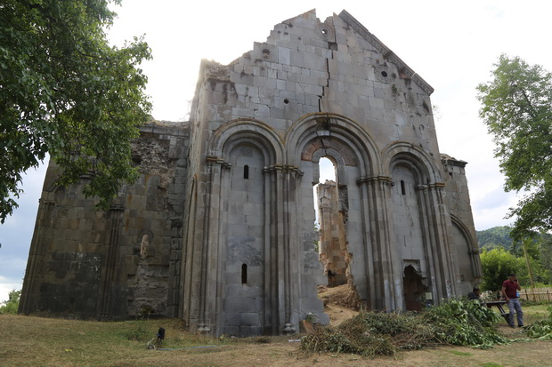

Rize ilinin Ardeşen ilçesinde Çiftekavak (Cibist̆asi) mahallesinde İstanbul Rum Ortodoks Patrikhanesi'nin Trabzon Metropolitliğine bağlı yıkık bir kilise kalıntısıdır. Kilisenin Orta Çağ'da (Geç Bizans Dönemi) yapıldığı düşünülmektedir. Kilisenin mimari kanonu çok iyi incelenmiştir ve kilisenin mimarisi, Orta ve Geç Bizans dönemlerinin doğu koluna göre yapılmıştır. Bryer ve Wanfield yapının mimari özelliklerinden hareketle bu yapıyı Pazar ilçesinin Ocak köyündeki (Sap̆o) yapıyla açıkça benzediğini ve beşken merkez apsisinin Trabzon İmparatorluğu'nun mimarideki ayırt edici bir özelliği olduğunu vurgular. Yazarlar, buradan hareketle yapının Trabzon İmparatorluğu döneminde veya daha öncesinde yapıldığını tahmin etmektedirler.
